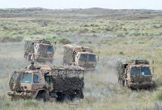
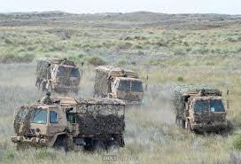
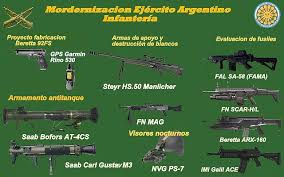
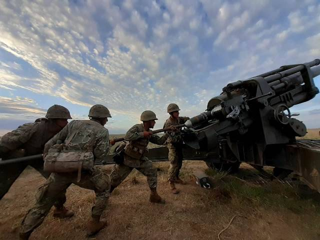

La modernización de los vehículos blindados del Ejército Argentino tiene como eje principal la incorporación de los Vehículos de Combate Blindados a Rueda (VCBR) Stryker 8x8, adquiridos a Estados Unidos. Estos vehículos, ampliamente utilizados por fuerzas militares modernas, representan un salto tecnológico significativo para la capacidad terrestre argentina. La llegada de los Stryker busca potenciar la movilidad táctica, permitiendo desplazar tropas con mayor rapidez y seguridad en distintos tipos de terreno. Además, su diseño modular y su equipamiento avanzado mejoran la protección del personal, el despliegue rápido y la capacidad operativa general de las unidades mecanizadas. Esta incorporación se enmarca dentro de un proceso más amplio de actualización, orientado a renovar medios, incrementar la eficiencia de las brigadas mecanizadas y adecuar la fuerza a los estándares operativos contemporáneos.
 

El Ejército Argentino avanza en la incorporación de nuevas tecnologías mediante la modernización de su equipamiento y la adopción de sistemas de última generación. Entre estos avances se destacan la actualización del fusil FAL, la adquisición de vehículos modernos y la incorporación de capacidades tecnológicas avanzadas orientadas a reforzar la defensa y la vigilancia del territorio. Dentro de este proceso, sobresalen el radar RPA-200M, desarrollado por INVAP, que mejora significativamente la cobertura y detección aérea, y el sistema de misiles antiaéreos RBS 70 NG, que aporta mayor precisión y capacidad de respuesta frente a amenazas aéreas. A esto se suman nuevas herramientas para el adiestramiento, como simuladores de alta fidelidad, así como proyectos vinculados al desarrollo de inteligencia artificial, sistemas no tripulados y plataformas de reconocimiento. Todas estas innovaciones buscan elevar la operatividad, optimizar la toma de decisiones y fortalecer la capacidad de respuesta del Ejército en un amplio espectro de misiones.
 La capacitación del personal del Ejército Argentino se basa en una formación integral que incluye instrucción militar básica, entrenamiento físico y mental, manejo de armas, primeros auxilios y fundamentos tácticos. Sobre esta base, el personal desarrolla competencias en tácticas y estrategias, liderazgo y gestión de equipos, necesarias para la conducción y el cumplimiento de misiones operativas. El proceso se complementa con especializaciones técnicas en áreas como ciberdefensa, logística, comunicaciones y operaciones especiales, asegurando que la fuerza cuente con profesionales capacitados para enfrentar los desafíos tecnológicos y operativos actuales.